The calendar list on a phone
These are screenshots of the live /kalender page (real fonts, real data, Saturday 5 September), rebuilt in the browser for each option. A phone opens the calendar in this list view by default, so every phone visitor sees this row. Ticket #2599.
The row shows no opponent
On 320px most rows show one letter (F.., K, l). On 390px most rows show KCVV Ele… — our own club, which is always one of the two sides. A parent cannot see who their child plays.
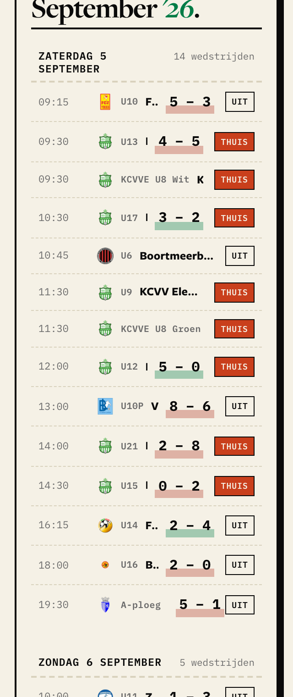
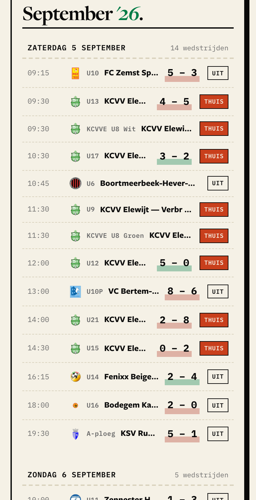
Drop THUIS / UIT
The stack already says it: our green crest on top = home, at the bottom = away. The desktop team page follows exactly this rule today — "no venue indicator, the order conveys home/away". The team page only adds a marker on phones because there it shows the opponent alone, so the order is gone.
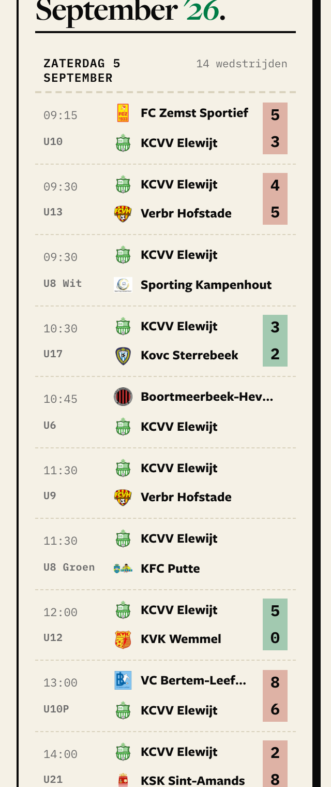
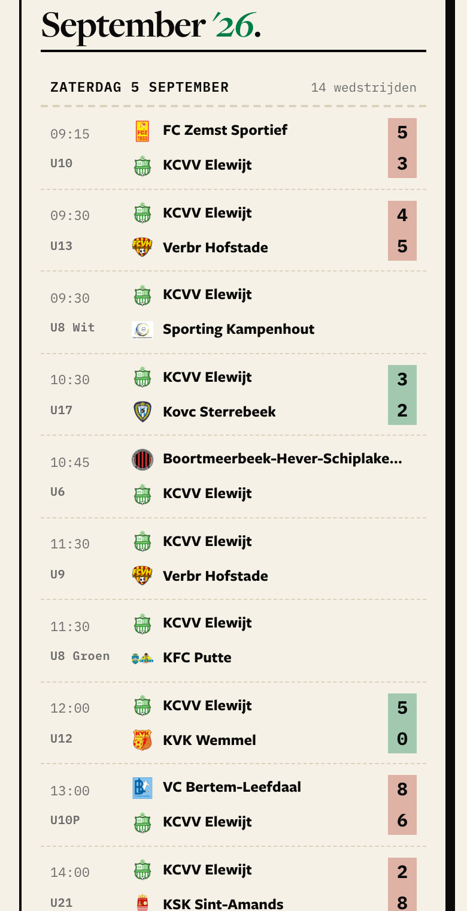
- Names cut on 320px: 24 of 154 lines (with the box: 101). Fixes the one weak spot of home over away.
- A parent who does not know "home team first" must learn it once.
Small house / bus icon
The icon the team page already uses on phones. Quiet, grey, 14px.
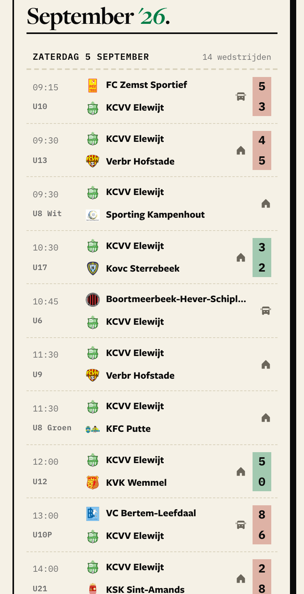
- Says home/away for people who do not read the order. 35 of 154 cut on 320px.
- Says the same thing twice. Breaks the team page's own rule (a marker only when the order is missing).
Round 2 (decided: colour the whole score box)
Colour the whole score box
Home over away is decided. The win/loss colour now fills the box behind both numbers — green won, brick lost, none for a draw — so it sits in the same place on every row. The box sits right against a fixed-width THUIS/UIT, so the scores line up down the list.
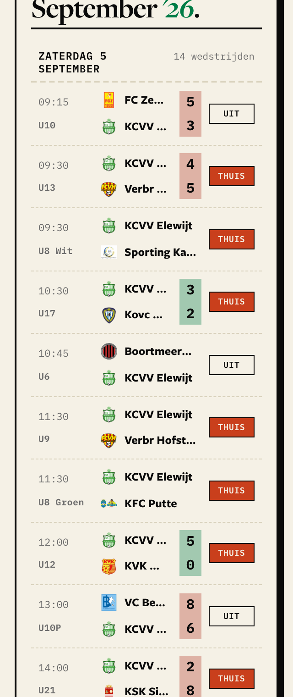
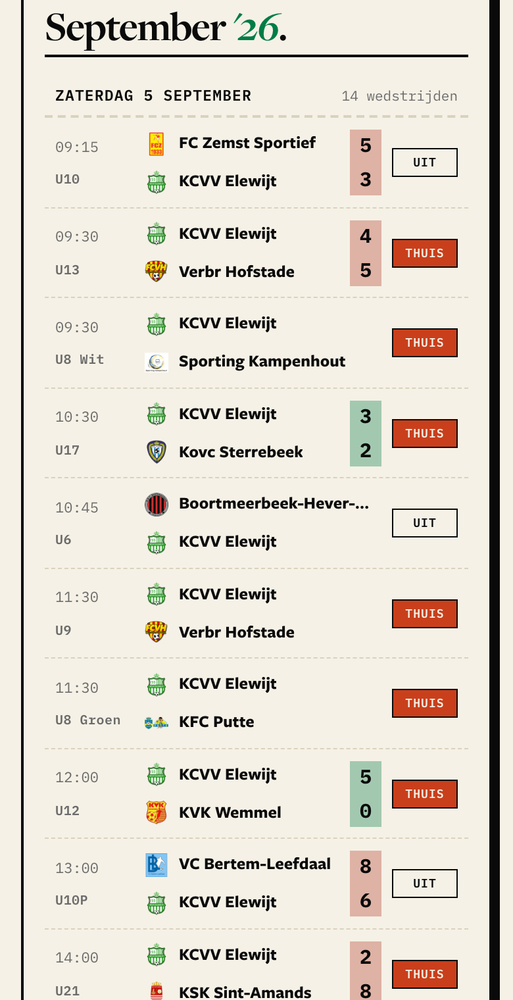
- You see how the whole Saturday went at a glance — a column of green and brick.
- Every other score on the site carries this colour (team page, homepage strip, calendar on desktop).
No colour
Same row, plain numbers. The stacked numbers already show who won.
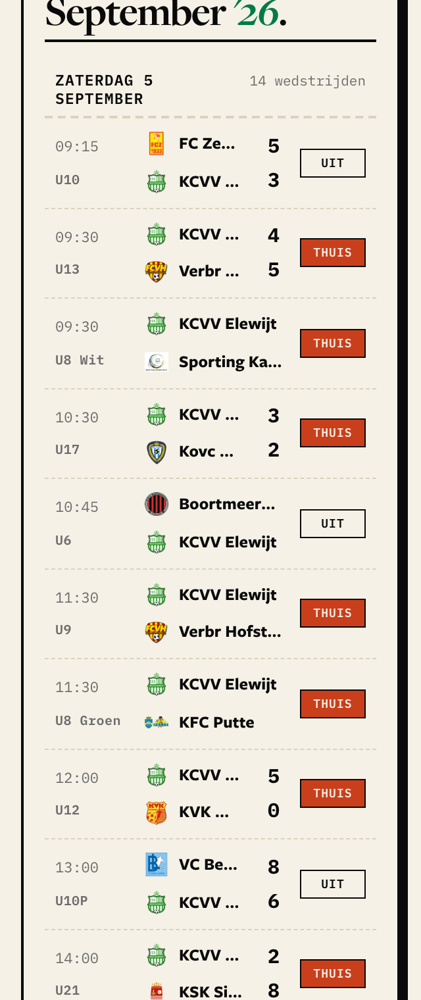
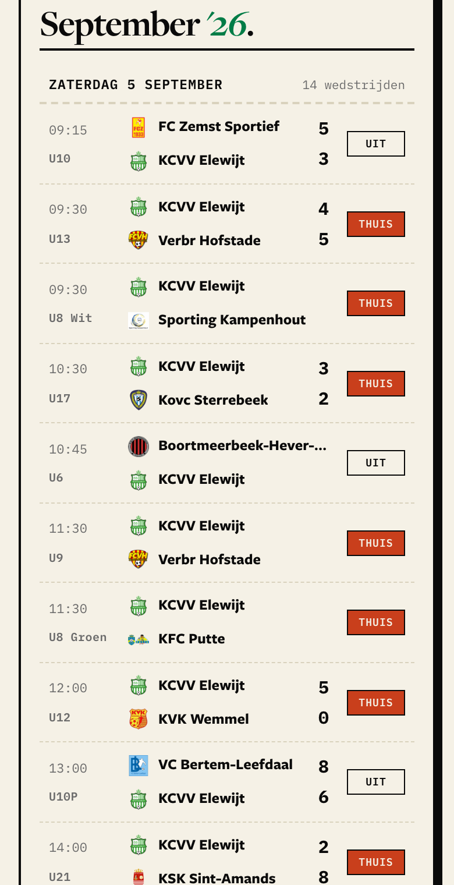
- Calmest version.
- The only score on the site without the win/loss colour.
- You must compare two numbers per row to know how we did.
Round 1 (decided: home over away)
Home over away
Time and our team in the left margin. Both clubs stacked, home on top. Each club's goals on its own line. The win/loss colour sits under our number.
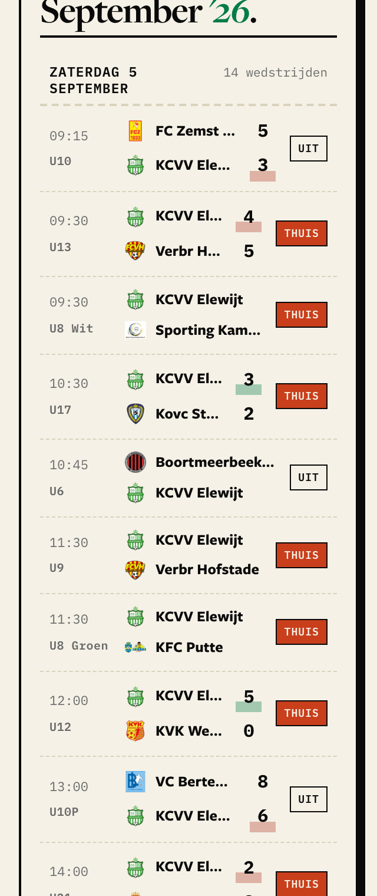
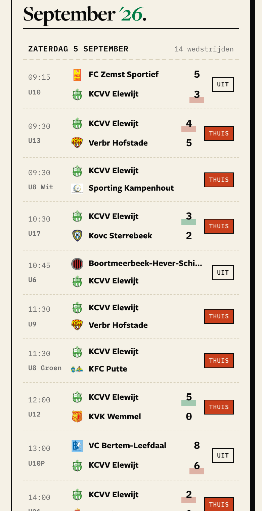
- You read a result straight off the rows:
FC Zemst 5 / KCVV 3. No need to decode5 – 3plusUIT. - The order already says home or away — the same rule as the desktop team page ("the order conveys home/away").
- Every football app does this. Same height as Option 2.
- On a 320px phone it cuts twice as many names (see table): score and
THUISsit side by side, so the names get ~30px less. - The opponent jumps between the top and bottom line, so you cannot run your eye down one line to read who we play.
- Build fix needed: the scores jump sideways between
UITandTHUISrows (look at 390px). A fixed-width tag column fixes that.
Opponent alone, two lines
Time and our team in the left margin. The opponent only in the middle. Score over THUIS/UIT on the right.
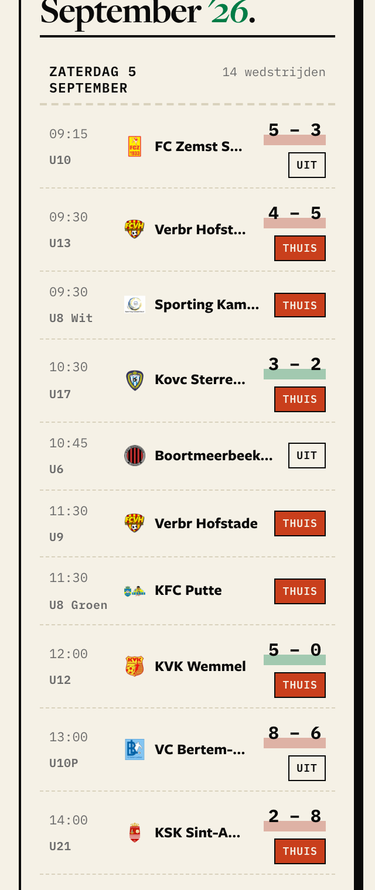
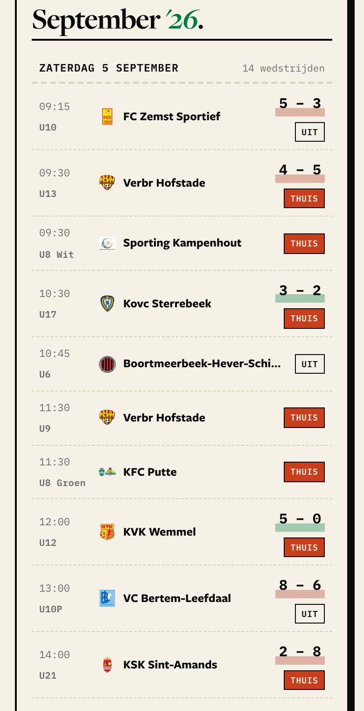
- Most room for the name. Opponent always in the same spot.
- Same rule as the phone rows on the team page, homepage strip and week view.
- The middle is one line in a two-line row — the extra height holds nothing there.
- A result needs decoding:
5 – 3+UITmeans we scored 3.
Measured on all 77 rows of the live page
| Names cut, 320px | Names cut, 390px | Row height | 14-match Saturday | |
|---|---|---|---|---|
| Today | 77 / 77 rows (47 show almost nothing) | 76 / 77 rows | 42px | 591px |
| Option 1 home over away | 89 / 154 name lines | 6 / 154 name lines | 70px | 986px |
| Option 2 opponent alone | 39 / 77 names | 6 / 77 names | 67px | 940px |
- On 390px both options only cut the very long names, like
Boortmeerbeek-Hever-Schi…(37 letters). The difference is only on small 320px phones. - The "6.D density lock" that the ticket worries about chose show every row, never fold rows away over folding a busy day. It never ruled on row height. A taller row does not break it.
- Also fixed in the same change: the calendar calls two teams
KCVVE U8 Wit/KCVVE U8 Groen; everywhere else they areU8 Wit/U8 Groen.